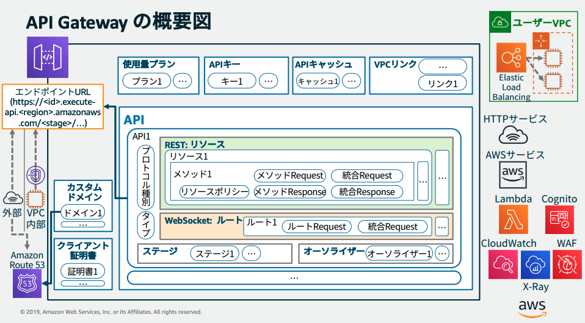

API Gateway
セキュリティ概要
- デフォルトのエッジ最適化エンドポイントで CloudFront レイヤーでの DDoS 緩和。
- リージョン API エンドポイントをオリジンとしたユーザ管理の CloudFront で WAF/Shield Advanced による保護が可能。
- WAF を API のステージ毎に設定できる。
-
リソースポリシーによるアクセスコントロール
- プリンシパル、IP アドレス(範囲/CIDR)、VPC の制限。
- URL パスとメソッドの組み合わせを ARN で参照して制限。
-
プライベート API エンドポイントで特定 VPC だけに公開。
-
オーソライザーによるユーザ認証
- IAM アクセス権限: ID 連携等でクリデンシャルを持つユーザの認証・認可。
- Cognito オーソライザー: Cognito ユーザープール連携。
- JWT オーソライザー: OIDC/OAuth 2.0 IdP 連携。
- Lambda オーソライザー: リクエスト、トークンをチェックする独自認証。
-
スロットリング・キャッシュによる DDoS 緩和。
- カスタムドメインの証明書設定と ACM による管理。

API エンドポイントタイプ
- API の URL のデプロイ方法の違い。
-
エッジ最適化 API エンドポイント (デフォルト)
- CloudFront でエッジロケーションにルーティング後、API Gateway に転送。
- 地理的に分散したクライアントへの接続時間が改善。
-
リージョン API エンドポイント:
- リージョンの API Gateway に直接リクエストが届く。
- 同一リージョンの EC2 インスタンス等からアクセスする場合は低レイテンシ。
- ユーザ管理の CloudFront ディストリビューションのオリジンとする場合はこちらを使う。
- Route 53 レイテンシールーティングでパブリック API をレーテンシーに応じてリージョンに振り分けるユースケースもある。
-
プライベート API エンドポイント:
- インターフェイス VPC エンドポイント (AWS PrivateLink) としてデプロイ。
- VPC 内からのみアクセスできる。
リソースポリシーによるアクセスコントロール
- API のリソースベースポリシー。
- 呼び出し元のプリンシパル、IP アドレス(範囲/CIDR)、VPC を制限できる。
- API のリソース (URL パス) とメソッドの組み合わせを ARN で参照して制御できる。
- 特定 VPC からのみ接続許可するなどの制御が可能。
- プライベート API エンドポイントでは VPC エンドポイントポリシーと併用可能
- API のリソースポリシーは接続可能な VPC を指定し、VPC エンドポイントポリシーで VPC 毎にプリンシパルや URL パスなどを細かく制御する、とか？
オーソライザー (認証)
- メソッドリクエストでリソースの各メソッド毎に設定 (WebSocket はルートリクエスト)。
-
IAM アクセス権限
- IAM ユーザのクリデンシャルから AWS 署名v4 を生成して Authorization ヘッダで送信。

- プリンシパルの IAM ポリシーに API Gateway への呼び出し権限が必要。
- ID フェデレーション (STS/Cognito ID プール) で一時クリデンシャルを取得したアプリもこの方法で認証可能。
-
Lambda オーソライザー
-
リクエストパラメータベース (REQUEST オーソライザー):
- ヘッダ、クエリ文字列、stageVariables, $context 変数を受け取って認証。
-
トークンベース (TOKEN オーソライザー):
- JWT や OAuth トークンなどのベアラートークンのみを受け取って認証。
-
-
Cognito オーソライザー
- Cognito ユーザープールで取得したトークン (JWT) を Authorization ヘッダで送信する。
-
JWT オーソライザー
- HTTP API のみサポート。
- OpenID Connect/OAuth 2.0 準拠の IdP が発行した JWT による認証 (Cognito ユーザープール含む)
- Cognito オーソライザーは Cognito ユーザープールしかサポートしないため、その他の IdP を使用する場合は Lambda オーソライザーによる実装が必要だった。
- Ref https://dev.classmethod.jp/articles/amazon-api-gateway-jwt-authorizers/
実行ロール
- API の実行ロールで統合バックエンド (Lambda 等) を呼び出す権限を指定する。
API キー
- X-API-Key ヘッダにキーを指定してリクエスト。
- API キー認証: API キーの指定を必須とする。
-
使用量プラン
- キーごとにクォータ(日/週/月)・スロットリング(レート/バースト)を設定。
- API キーはクォータ・スロットリングのための機能なので認証目的で使用しない。
-
REST API, WebSocket API で使用可能。
スロットリング
- 使用量プランとは個別に働くステージレベルでのによるスロットリング。
- 超過すると THROTTLED エラーとなり 429 (Too Many Requests) を返す。
- レート: トークンの補充レート=1秒あたりの想定平均リクエスト数。
- バースト: トークンをためるバケットの最大サイズ。

カスタムドメインと証明書設定
- API Gateway の API にカスタムドメインを設定し証明書を設定できる。
- ACM で API Gateway の証明書を管理できる。

- クライアント証明書の追加。
VPC リンク
- 統合バックエンドの1つ。
- VPC 内インスタンスの Web アプリに NLB 経由でアクセス。
CloudWatch Logs
- ステージ/メソッド単位でロギングを有効化。
-
実行ログ
- ERROR/INFO のレベル指定。
- リクエスト/レスポンスデータのログ出力の有無の指定。
-
アクセスログ
- API に誰がアクセスしたかのロギング。
-
実行ログ・アクセスログは別のロググループとなる。
Lambda
Lambda のトリガーと IAM ポリシー
-
イベントソース (プッシュモデル)
- S3 イベント等、Lambda 連携しているイベントソースが関数をトリガー。
- 関数のリソースベースポリシーでイベントソースのサービスを許可する。
-
プルモデル
- Lambda サービスがリソースをポーリング。
- 関数の実行ロールにイベントソースへのアクセス権が必要。
-
Request-Response モデル
- API Gateway や API で直接呼び出し。
リソースベースポリシー (関数ポリシー)
例
- 関数を呼び出すサービスをプリンシパルとして InvokeAction を許可する。
- S3 イベントの Lambda トリガー等はリソースベースポリシー必須
- S3 にはサービスロールを設定できないから
実行ロール
- プルモデルでポーリングする権限や関数から DynamoDB にアクセスする権限など。
- 関数からの CloudWatch Logs の書き込み等でも必要。
環境変数の暗号化
-
保管時はデフォルトで AWS managed CMK で暗号化され、関数が呼び出されると復号される
- Customer managed CMK も利用可能。
-
伝送中の暗号化のためのヘルパー
- 復号用のサンプルコードが表示されるので Lambda 関数内のコードで復号を実装する。
管理コンソールの時点でブラウザ上で KMS Encrypt でデータキーを使わず直接暗号化してから Lambda 側に環境変数を送っている。どちらもサイズ制限が 4KB までなので可能。復号も Decrypt で復号している。また Lambda 関数名を Encryption Context として指定している。
import boto3
import os
from base64 import b64decode
ENCRYPTED = os.environ['test']
# Decrypt code should run once and variables stored outside of the function
# handler so that these are decrypted once per container
DECRYPTED = boto3.client('kms').decrypt(
CiphertextBlob=b64decode(ENCRYPTED),
EncryptionContext={'LambdaFunctionName': os.environ['AWS_LAMBDA_FUNCTION_NAME']}
)['Plaintext'].decode('utf-8')
def lambda_handler(event, context):
# TODO handle the event here
pass
VPC アクセス
- 関数から VPC 内のリソースにインターネットを経由せずにアクセスさせたい場合。
-
関数に VPC サブネット(複数可) とセキュリティグループ(1つ)を設定する。
- AZ ごとにサブネットを指定してそれらを関数に設定することでマルチ AZ で可用性確保できる。
-
ENI により実現される
- サブネットごとに指定したセキュリティグループが設定された ENI が作成される。
- AWS Hyperplane を利用したクロスアカウントの VPC 間 NAT でカスタマー VPC 内の ENI に接続される。

- 実行ロールに AWSLambdaVPCAccessExecutionRole という管理ポリシーが必要。
-
VPC を設定したタイミングから関数からのインターネットアクセスは不可
-
パブリック IP は割り当てられない (=IGW にパブリック IP への NAT が登録されない)
- ENI にサブネットのプライベート IP が DHCP で割り当てられる。
-
インターネットアクセスにはパブリックサブネットに NAT GW を置いてやる必要がある。
-
ロギングと監視
Lambda@Edge
-
CloudFront の機能。エッジロケーションで Lambda でリクエスト/レスポンスをハンドルできる。
- エッジでの認証処理など。
-
Lambda 関数をグローバルにデプロイできる。
- キャッシュがある場合にリクエストを処理したくない場合はオリジンリクエストに関数を設定する。
- レガシーアプリケーションに HTTP セキュリティヘッダーを追加するというユースケースも
- Content Security-Policy
- X-Frame-Options
- X-XSS-Protection